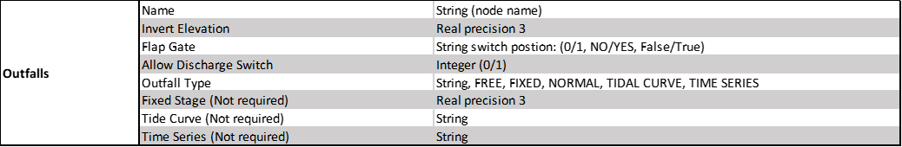
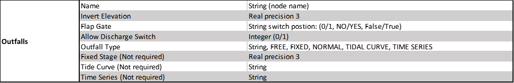

Storm Drain - Shapefile Development
Overview
This lesson will outline how to construct a storm drain network that is ready for FLO-2D Plugin to process.
Required Data
File |
Content |
|---|---|
Point shapefile |
Inlets Junctions |
Polyline shapefile |
Conduits |
Point shapefile |
Outfalls |
Path: …\Coastal Training\Project Data\Storm Drain
Step 1: Import shapefiles for storm drain features
Select the Storm Drain Group in the User Layer Group.
Drag the 3 Shapefiles onto the map space.
Check the Attribute Tables for the layers Conduits, Inlets Junctions, and Outfalls. To do this right click each layer and then Click Attributes Table.


The following data tables may be found in the shapefile attributes. Some data is required and some data can be skipped.

 

Step 2. Add missing columns to shapefiles
Open the attributes for any storm drain shapefile.
Click the Edit pencil and the Add Field button.

Using the tables in Step 2, add a field or two to the shapefiles.
In this example a new field called Flap Gate is an integer with 1 length.

If a real number field is created, the Length and Precision variables can help keep the number precision in check.
This is the end of the lesson. Keep adding fields until the class continues. It’s OK to leave them blank because they won’t be used in the next module.